반도체설계산업기사 (2018-04-28 기출문제)
1과목: 반도체공학
1. 빛을 받으면 전자와 정공 쌍생성을 통해 전류를 발생하는 다이오드는?
- 스위칭 다이오드(Switching Diode)
- 정류 다이오드(Rectification Diode)
- 광 다이오드(Photo Diode)
- 발광 다이오드(Light emitting Diode)
(정답률: 76%)

2. P형 기판을 갖는 MOS 용량 구조에서 게이트 금속 극판의 전압 VGS가 기판 전압 VBS 보다 큰 경우 VGS가 증가함에 따라 전계가 증가함으로써 실리콘 경계면에 전자가 모여 형성된 층은?
- 축적층(accumulation layer)
- 공핍층(depletion layer)
- 반전층(inversion layer)
- 차단층(cut-off layer)
(정답률: 65%)
3. 접합형 전계효과 트랜지스터(JFET: Junction Field Effect Transistor)의 동작은?
- 소수 운반자의 흐름에 의한다.
- 재결합에 의한다.
- 부성 저항에 의한다.
- 다수 운반자의 흐름에 의한다.
(정답률: 75%)
4. 원소 주기율표에서 반도체 재료로 사용하지 않는 족은?
- Ⅰ족
- Ⅲ 족
- Ⅳ 족
- Ⅴ 족
(정답률: 91%)
5. PN 접합 다이오드에서 역방향 바이어스 전압이 인가되었을 때 나타나는 현상과 관련이 없는 것은?
- 터널 효과(Tunnel effect)
- 눈사태 항복 효과(Avalanche breakdown effect)
- 제너 항복 효과(Zener breakdown effect)
- 홀 효과(Hall effect)
(정답률: 80%)
6. PN접합 다이오드에서 바이어스의 인가방법에 따른 전위장벽은?
- 순방향 바이어스때가 역방향 바이어스 때보다 높다.
- 역방향 바이어스때가 순뱡향 바이어스 때보다 높다.
- 순방향 바이어스때와 역방향 바이어스때가 같다.
- 순방향 바이어스때와 역방향 바이어스때는 비교할 수 없다.
(정답률: 70%)
7. FET의 차단 주파수에 영향을 주는 요소가 아닌 것은?
- 채널 길이
- 채널 폭
- 반도체 캐리어 밀도
- 이동도
(정답률: 57%)
8. 다음 중 전도대역의 전자와 가전자대역의 정공이 가전자상태에 있는 전자가 전도대역으로 천이되었을 때 발생되는 현상은?
- 전자 생성
- 정공 생성
- 전자-정공 쌍생성
- 전자-정공 재결합
(정답률: 68%)
9. 평형 상태의 PN 접합에서 내부 전위장벽은?
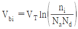
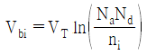
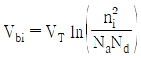
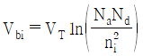
(정답률: 69%)
10. P형 반도체의 정공이 1m3 당 4.4×1020[m-3]일 때, 반도체의 도전율은 얼마인가? (단, 정공의 이동도는 0.17[m2/V·s]이다.)
- 1.197[Ω-1m-1]
- 11.97[Ω-1m-1]
- 119.7[Ω-1m-1]
- 1197[Ω-1m-1]
(정답률: 76%)
11. Si의 물리적 성질 중 해당되지 않는 것은?
- 원자번호: 14
- 격자 상수(A) 2.35
- 녹는 온도 : 약 1420 °C
- 원자 질량 : 28.0855[g/mol]
(정답률: 77%)
12. 반도체의 전기 전도도에 영향을 미치지 않는 것은?
- 물질의 광학적인 여기 상태
- 물질의 온도 변화
- 물질의 불순물 함량
- 물질의 질량
(정답률: 86%)
13. 컬렉터의 역바이어스를 계속해서 증가시키면 컬렉터 접합의 공간전하층이 베이스 영역 안으로 깊숙이 퍼져가며 마지막에는 이미터 접합의 공간 전하층과 닿게 되어 베이스 중성영역이 없어지는 현상은?
- 열 폭주 현상
- 절연파괴 현상
- 래치-업(latch-up) 현상
- 펀치-쓰루(punch-through) 현상
(정답률: 85%)
14. nMOS FET에서 게이트 전압을 높이면 드레인과 소스 사이에 전류 ID가 흐르기 시작한다. 이 시점의 게이트 전압을 무엇이라고 하는가?
- 문턱전압
- 바이어스전압
- 포화전압
- 항복전압
(정답률: 94%)
15. 전력 소자로서 쓰이는 정류기의 필요조건이 아닌 것은?
- 순방향 전압 강하가 작을 것
- 내열성이 낮을 것
- 방열 특성이 좋을 것
- 역내압 전압이 높고, 역방향 전류가 작을 것
(정답률: 73%)
16. 화합물 반도체 재료가 아닌 것은?
- GaAs
- Ge
- SiC
- GaN
(정답률: 72%)
17. 다음 반도체의 종류에 따른 다수캐리어와 소수캐리어에 관한 내용 중 옳은 것은?
- n형 반도체의 소수캐리어는 전자이다.
- p형 반도체의 소수캐리어는 정공이다.
- n형 반도체의 다수캐리어는 전자이다.
- p형 반도체의 다수캐리어는 전자이다.
(정답률: 90%)
18. 쌍극성 접합 트랜지스터의 바람직한 조건이 아닌 것은?
- 이미터 영역의 캐리어 밀도를 낮게 해야 한다.
- 컬렉터 영역의 캐리어 밀도를 낮게 해야 한다.
- 베이스 영역의 고유저항은 이미터 영역의 고유저항보다 훨씬 커야 한다.
- 증폭기 동작을 위해서는 이미터-베이스 접합은 순방향 바이어스를 인가한다.
(정답률: 66%)
19. PN 접합에서 공핍층의 두께는 역방향 바이어스전압(Vr)에 어떤 관계가 있는가?
- √Vr에 비례
- √Vr에 반비례
- v2r에 비례
- v2r에 반비례
(정답률: 62%)
20. NPN 바이폴라 트랜지스터의 3가지 영역을 불순물의 도핑 농도 크기가 큰 순서대로 나열한 것은?
- 이미터 ＞ 베이스 ＞ 컬렉터
- 이미터 ＞ 컬렉터 ＞ 베이스
- 컬렉터 ＞ 이미터 ＞ 베이스
- 컬렉터 ＞ 베이스 ＞ 이미터
(정답률: 74%)
2과목: 전자회로
21. 1mH의 인덕터에 전압 1V, 주파수 1kHz의 신호를 인가할 경우 리액턴스 값은?
- 1[Ω]
- 1[H]
- 2π[Ω]
- 2π[H]
(정답률: 57%)
22. LED 세그먼트의 활용법으로 옳은 것은?
- 공통 애노드(Common Anode) 끝단에 전원을 연결한다.
- 공통 애노드(Common Anode) 끝단에 접지을 연결한다.
- 공통 애노드(Common Anode) 세그먼트의 캐소드 단자를 각각 전원을 연결한다.
- 공통 애노드(Common Anode) 세그먼트의 캐소드 단자를 각각 접지에 연결한다.
(정답률: 64%)
23. 부귀환 증폭기의 일반적인 특징에 대한 설명으로 틀린 것은?
- 왜곡의 감소
- 잡음의 감소
- 대역폭의 증가
- 안정도의 감소
(정답률: 69%)
24. 이상적인 연산증폭기(OP-AMP)의 특징으로 틀린 것은?
- 입력 임피던스는 무한대(∞) 이다.
- 입력은 반전과 비반전 단자로 구분할 수 있다.
- 전압이득은 무한대(∞) 이다.
- 출력 임피던스는 무한대(∞) 이다.
(정답률: 73%)
25. 5V 직류전압원에 저항(R) 30Ω과 LED가 직렬로 연결된 회로에서 LED에서 소모되는 전력은? (단, LED의 전압강하는 1.4V 이다.)
- 124mW
- 168mW
- 432mW
- 600mW
(정답률: 79%)
26. 그림과 같이 1kΩ저항과 다이오드의 직렬회로에서 전압(VO)의 크기는 약 몇 V 인가?
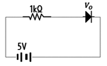
- 0
- 0.1
- 0.7
- 5
(정답률: 76%)
27. 다음 회로에서 전압 이득이 –100이 되기 위한 R2값은 얼마인가?
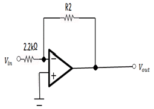
- 2.2kΩ
- 110kΩ
- 220kΩ
- 440kΩ
(정답률: 78%)
28. 다이오드에 관한설명으로 옳지 않은 것은?
- 다이오드는 역바이어스와 순바이어스로 동작한다.
- 다이오드는 이상적인 스위치로 볼 수 있다.
- 다이오드는 역 항복에서 동작해서는 아니된다.
- 항복전압은 장벽전위보다 낮다.
(정답률: 73%)
29. 다음 회로에 Vi = Vmsinωt 의 파형을 인가하였을 때 출력 파형에 해당되는 회로는? (단, Vm은 3V 보다 크다.)
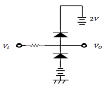
- 양단 클리퍼 회로
- 톱니파 발생 회로
- 정현파 발생 회로
- AND 게이트 회로
(정답률: 74%)
30. AM 변조에서 반송파의 전력이 500mW, 변조도가 60%일 때, 피변조파의 전력은 몇 mW 인가?
- 180
- 300
- 590
- 900
(정답률: 54%)
31. 귀환 발진기의 발진조건에 대한 설명 중 틀린 것은? (단, A는 증폭도, β는 귀환량이다.)
- 정귀환을 이용한다.
- A의 위상 변화는 180°이다.
- β의 위상 변화는 0°이다.
- 귀환이득 Aβ=1이며, 위상 변화는 0°이다.
(정답률: 66%)
32. 일반적인 펄스 파형의 구간별 명칭에 관한 설명 중 옳은 것은?
- 지연시간: 목표량에 0~40[%]까지 접근하는 시간
- 정정시간: 목표량에 ±3[%]까지 접근하는 시간
- 상승시간: 목표량에 10~90[%]까지 접근하는 시간
- 하강시간: 목표량에 10~90[%]까지 하강하는 시간
(정답률: 59%)
33. n형 반도체를 만들기 위하여 사용하는 불순물은?
- 인(P)
- 알루미늄(Al)
- 인듐(In)
- 갈륨(Ga)
(정답률: 63%)
34. 다음 같은 회로에서 RL에 100mA의 전류가 흐를 때 RL의 값은? (단, Vi=5V, R1=47k, R2=470kΩ이다.)
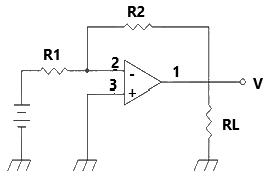
- 5Ω
- 50Ω
- 500Ω
- 5kΩ
(정답률: 66%)
35. 연산증폭기에 대한 설명 중 옳은 것은?
- 정귀환 회로를 추가한 고이득 직결증폭기를 말하며, 병렬 증폭기를 이용한다.
- IC화된 연산증폭기는 신뢰도, 안정도가 떨어지지만 저가, 회로의 소형화 등의 장점을 가진다.
- 이상적 연산증폭기인 경우 대역폭은 ∞를 갖는다.
- 가상 접지는 실제 물리적 접지와 전기적 특성이 동일하다.
(정답률: 67%)
36. 신호의 일그러짐이 가장 적고 안정한 증폭기는?
- A급
- B급
- C급
- AB급
(정답률: 73%)
37. 그림과 같은 회로를 여파기로 사용하면 주파수 특성은?
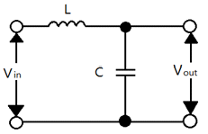
- 고역통과특성
- 저역통과특성
- 대역통과특성
- 대역저지특성
(정답률: 64%)
38. 트랜지스터에서 β는 다음 중 어느 조건에서 결정할 수 있겠는가?
- IE가 일정할 때 VCB와 IB의 변화
- IE가 일정할 때 IC와 IB의 변화
- VCE가 일정할 때 VCB와 IB의 변화
- VCE가 일정할 때 IC와 IB의 변화
(정답률: 65%)
39. 트랜지스터를 증폭기로 사용할 때의 동작영역으로 옳은 것은?
- 차단영역
- 포화영역
- 활성영역
- 비포화영역
(정답률: 79%)
40. 정류 전원의 구성 중 정류기 회로와 필터 사이에 나타나는 파형의 형태는? (단, 입력전압은 사인파 교류전압이라 가정한다.)
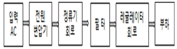
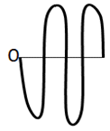
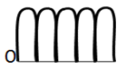
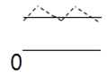
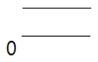
(정답률: 68%)
3과목: 논리회로
41. 다음 회로가 나타내는 기능은?
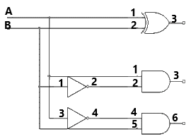
- 가산기
- 감산기
- 비교기
- 디코더
(정답률: 65%)
42. 0 과 1의 조합에 의하여 어떠한 기호라도 표현될수 있도로 부호화를 행하는 회로를 무엇이라고 하는가?
- Encoder
- Decoder
- Comparator
- Detector
(정답률: 64%)
43. 다음은 전가산기의 진리표 일부이다. A, B, C, D의 값은? (단, Z는 밑의 자리에서 올라오는 캐리(carry)이며, 출력 중 C는 다음 자리로 올라가는 캐리이다.)
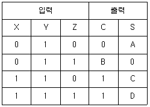
- A=0, B=1, C=0, D=1
- A=1, B=1, C=1, D=0
- A=1, B=1, C=0, D=1
- A=1, B=0, C=1, D=1
(정답률: 75%)
44. 읽기 전용의 기억장치는?
- Mask Rom
- RAM
- HDD
- SSD
(정답률: 77%)
45. 1비트 단위의 2진수 정보를 저장(기억)할 수 있는 2진 셀(cell)을 무엇이라 하는가?
- RAM
- RO
- 플립플롭
- 멀티플렉서
(정답률: 64%)
46. JK 플립플롬을 다음 그림과 같이 연결했을 때 같은 기능을 수행하는 것은?
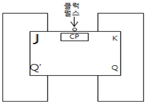
- D 멀티플렉서
- RS 멀티플렉서
- T 멀티플렉서
- 래치(latch)
(정답률: 73%)
47. 기억장치에 관한 설명 중 가장 옳지 않은 것은?
- 프로그램이나 데이터를 저장하는 곳을 기억장치라 한다.
- 기억장치를 기능상 크게 주기기억장치와 입 · 출력 장치로 분류한다.
- 주기억장치는 전자계산기 중앙처리장치와 직접 연결되어 있다.
- 보조기억장치의 종류에는 자기저장장치(HDD, 폴로피디스크)와 반도체저장장치(SSD, 플래시 메모리)가 있다.
(정답률: 61%)
48. BCD 코드에 3을 더하여 변형시킨 코드로 10진수에 대한 보수를 자체에 포함하고 있어 자기보수 코드로 이용되는 코드는?
- BCD 코드
- 그레이 코드
- 3초과 코드
- 5421 코드
(정답률: 84%)
49. 다음 회로도의 A 값이 0011이고, B 값이 1000일 때 출력 Y는?
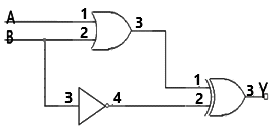
- 1100
- 0011
- 1011
- 1101
(정답률: 73%)
50. 다음 회로 중 조합논리회로가 아닌 것은?
- 디코더
- 멀티플렉서
- 가산기
- 카운터
(정답률: 58%)
51. 10진수 0.6875를 2진수로 변환할 때 옳은 것은?
- 0.1010
- 0.1101
- 0.1011
- 0.1111
(정답률: 66%)
52. n단으로 구성된 일반 카운터는 2n개의 모드를 갖는데 반해, n단으로 구성된 시프트 카운터는 몇 개의 모드를 갖는가?
- n
- n+1
- 2n
- 3n
(정답률: 69%)
53. 3개의 입력과 2개의 출력을 가지는 회로이며 앞 디지트에 빌려준 1을 고려하여 뺄셈을 수행하는 것은?
- 디코더
- 인코더
- 반감산기
- 전감산기
(정답률: 69%)
54. 판독/기록 메모리에 데이터를 넣는 동작으로 옳은 것은?
- 읽기(read)
- 제어(control)
- 기록(write)
- 인출(fetch)
(정답률: 77%)
55. 순서논리회로를 설계하려 할 때 그 순서로 가장 옳은 것은?
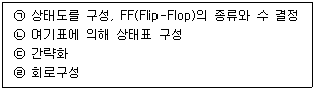
- ㉡→㉢→㉣→㉠
- ㉠→㉡→㉢→㉣
- ㉠→㉣→㉡→㉢
- ㉣→㉢→㉡→㉠
(정답률: 74%)
56. T형 플립플롭에서 입력 T=0일 때 다음 상태 Q(t+1)는? (단, 현재 상태는 Q(t)이다.)
- 1
- 0
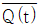
- Q(t)
(정답률: 58%)
57. 10진수 0.1875를 8진수로 변환한 결과는?
- 0.13
- 0.14
- 0.15
- 0.16
(정답률: 66%)
58. 논리식
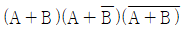
를 가장 간략히 간소화 시킨 것은?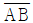
- B
- AB
- A+B
(정답률: 58%)
59. 디코더의 출력 선이 8개라면 입력 선은 몇 개 인가?
- 1
- 2
- 3
- 4
(정답률: 67%)
60. 다음 회로의 논리식은?
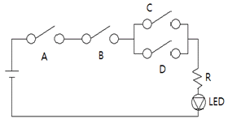
- AB(C+D)
- (A+B)CD
- (A+B)(C+D)
- ABCD
(정답률: 67%)
4과목: 집적회로 설계이론
61. 시스템의 행동을 기술하기 위한 하드웨어 기술 언어에 속하는 것은?
- C-언어
- Verilo
- Pascal
- COBOL
(정답률: 70%)
62. 다음 집적회로의 제조 과정에서 가장 늦게 진행되는 작업은?
- 논리회로 설계
- 패키징
- 레이아웃 설계
- 마스크 제작
(정답률: 75%)
63. MOSFET에서 출력 논리 레벨이 완전히 복원되어 안정화되는 트랜지스터는?
- CMOS
- I-MOS
- nMOS
- pMOS
(정답률: 78%)
64. 실제의 IC 소자들이 가지고 있는 지연시간을 고려한 시뮬레이션 방법으로 여러 단이 종속적(cascade)으로 연결되었을 경우, 최종출력에서 발생하는 spike나 glitch 등을 방지하기 위한 방법은?
- 타이밍 시뮬레이션(Timing Simulation)
- 구조적시뮬레이션(Structural Simulation)
- 계층적시뮬레이션Hierarchical Simulation)
- 기능성시뮬레이션(Functionality Simulation)
(정답률: 70%)
65. VLSI 설계에서 강조되는 구조적 설계의 원칙으로 거리가 먼 것은?
- 정규성(Regularity)
- 모듈성(Modularity)
- 국지성(Locality)
- 반복성(Repeatability)
(정답률: 79%)
66. 플로우(flow) 플랜부터 라우팅까지 수동으로 진행하며 개발기간이 길어지는 대신 의도한 대로 레이아웃이 가능한 설계방식은?
- 반 주문형
- FPGA
- 완전 주문형
- 표준 셀
(정답률: 81%)
67. 다음 설명 중 Pseudo-nMOS 회로에 대한 설명으로 옳은 것은?
- nMOS 논리의 공핍모드 부하 nMOS를 pMOS로 대체하고 pMOS가 항상 ON상태가 되도록 pMOS의 게이트 입력을 항상 Vss에 연결한 회로
- nMOS 논리의 공핍모드 부하 nMOS를 pMOS로 대체하고 pMOS가 항상 OFF 상태가 되도록 pMOS의 게이트 입력을 Vss에 연결한 회로
- pMOS 논리의 공핍모드 부하 pMOS를 nMOS로 대체하고 nMOS가 항상 ON 상태가 되도록 nMOS의 게이트 입력을 Vss에 연결한 회로
- pMOS 논리의 공핍모드 부하 pMOS를 nMOS로 대체하고 nMOS가 항상 OFF 상태가 되도록 nMOS의 게이트 입력을 Vss에 연결한 회로
(정답률: 60%)
68. 모노리식(Monolithic) IC의 제조과정 중 제일 마지막에 수행하는 공정은?
- 에피택셜(Epitaxial) 성장
- 산화막(Oxide) 생성
- 알루미늄 증착
- 불순물 확산
(정답률: 88%)
69. 입력 정적 CMOS NAND 게이트에 대한 설명 중 틀린 것은?
- 2개의 PMOS와 2개의 NMOS로 구성된다.
- PMOS는 출력과 VDD 사이에 병렬로 연결된다.
- NMOS는 출력과 GND 사이에 직렬로 연결된다.
- 2개의 입력 단자들이 모두 안정된 상태에 있을 때 전류가 흐른다.
(정답률: 73%)
70. 다음 CMOS 회로에서 NOR 게이트는?
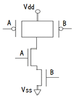
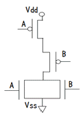
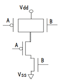
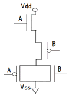
(정답률: 72%)
71. 게이트 어레이의 일종인 SoG(Sea of Gates) 설계방식의 특징으로 틀린 것은?
- 게이트 어레이와 같이 배선을 위한 배선 영역(채널)을 둔다.
- 게이트 어레이 방식보다 훨씬 더 많은 게이트를 집적시킬 수 있다.
- 배선을 위한 메탈 레이어가 추가로 필요하기 때문에 공정비용이 늘어난다.
- 게이트 어레이와 마찬가지로 NAND 또는 NOR 게이트만으로 구성되어 있다.
(정답률: 62%)
72. 일정한 이동도를 갖는 이상적인 MOSFET에서 아래와 같은 파라미터를 주었을 때 차단주파수는? (단, 채널길이 L=4um, 채널 폭 W=20um, 전자의 이동도 μn=4000cm/V·s, 문턱전압 vT=0.642, 게이트 전압 VGS=3V로 한다.)
- 6.69 GHz
- 9.38 GHz
- 8.96 GHz
- 2.37 GHz
(정답률: 61%)
73. CMOS 집적회로에 대한 설명 중 옳지 않은 것은?
- pMOS와 nMOS를 상보적으로 사용하여 회로를 구성한다.
- 정적인 전류를 최소화하여 저전력 특성을 갖는다.
- BJT 집적회로에 비하여 고밀도 집적에 유리하다.
- BJT 집적회로에 비하여 고속 동작에 유리하다.
(정답률: 74%)
74. SPICE로 CMOS 인버터의 입출력 전압 전달특성을 확인할 때 사용되는 해석 방법은?
- 잡음 해석
- AC 해석
- 과도(transient) 해석
- DC 해석
(정답률: 61%)
75. MOS 동적 논리회로를 정적논리와 비교한 설명으로 옳지 않은 것은?
- 용량성 부하에 저장되는 전하량을 이용하여 신호를 저장,유지하는 특성을 갖는다.
- 시스템의 타이밍 문제를 간소화할 수 있다.
- MOS소자가 적게 소요된다.
- 부하소자가 ON되었을 때만 전력을 소모하는 회로를 설계할 수 없으므로 전력소모가 낮다.
(정답률: 73%)
76. 게이트 어레이 설계기법의 일종으로 배선영역 없이 배선하는 기술은?
- SOG(Sea of Gate)
- PLD(Programmable Logic Device)
- CPLD(Complexed Programmable Logic Device)
- FPGA(Field Programmable Gate Array)
(정답률: 79%)
77. 다음 중 집적회로의 종류가 아닌 것은?
- 표준 집적회로
- 마이크로 집적회로
- 주문형 집적회로
- 자동 집적회로
(정답률: 64%)
78. 동일한 조건에서 MOS 트랜지스터의 채널 폭이 2배로 증가하고, 채널의 길이가반으로 감소하면 차단주파수(ft)의 변화는? (단, 포화영역으로 가정하고, 모든 기생 용량의 영향은 무시한다.)
- 2배로 증가
- 4배로 증가
- 0.5배 감소
- 0.25배 감소
(정답률: 71%)
79. CMOS 인버터의 동작 특성으로 틀린 것은?
- nMOS pull-down과 pMOS pull-up 트랜지스터로 구성되어 있다.
- 입력전압이 high 이면 pMOS 트랜지스터는 전도가 된다.
- 입력전압이 high 이면 출력 레벨은 low가 된다.
- 두 개의 FET에 대한 입력은 공통 게이트 단자에 의해 이루어진다.
(정답률: 57%)
80. 반도체 공정 과정 중 감광막에 대한 설명 으로 틀린 것은?
- 점착성의 폴리머(Polymer) 유기용액을 웨이퍼 기판 위에 넓게 발라 감광막을 형성시킨다.
- 양성 감광막은 빛이 쪼여진 부분이 용해된다.
- 불순물의 양을 조절하여 적당한 농도 분포를 얻는 단계를 말한다.
- 에칭과 산화물 에칭 세제, 이온주입에 대한 보호막 역할을 한다.
(정답률: 72%)